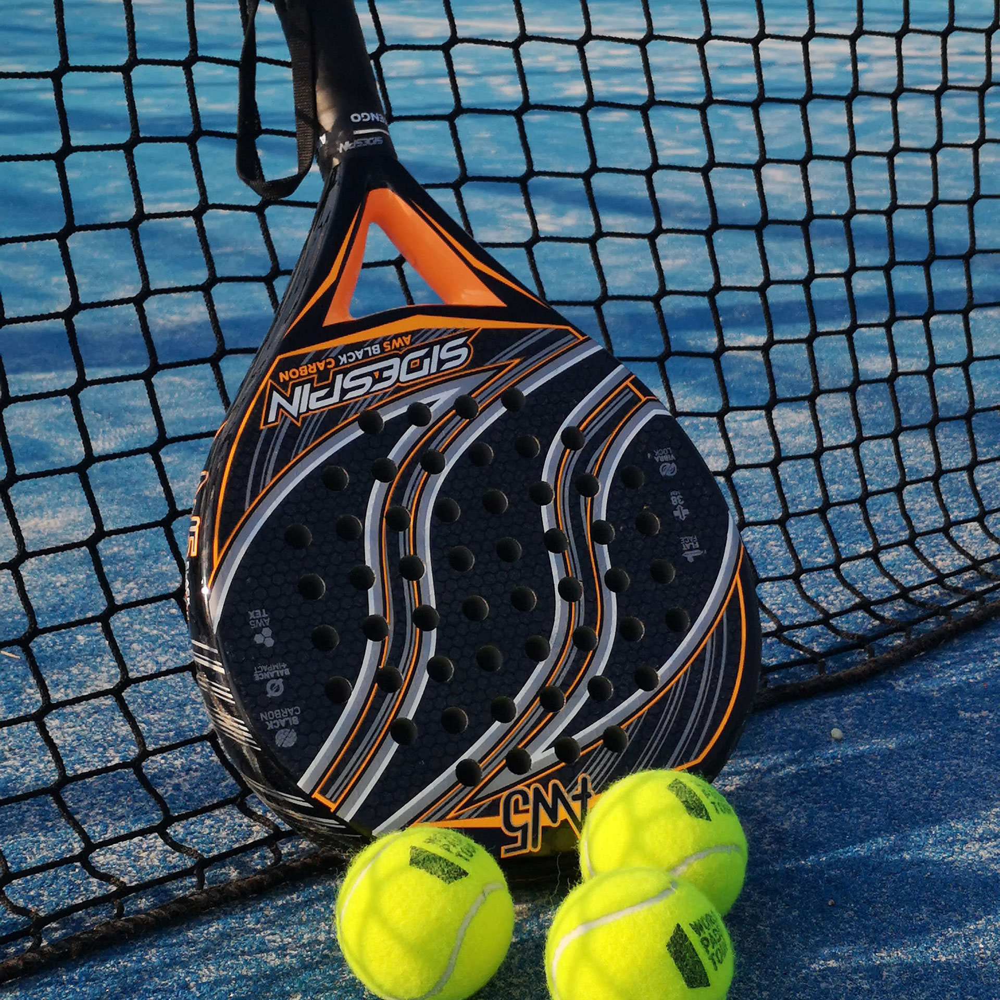

 In the heart of the padel court, we find a remarkable display of human camaraderie and athleticism, reminiscent of a carefully choreographed dance in the wild. The players, armed with padel rackets and clad in sporty attire, engage in a captivating ballet of skill and strategy. The court, encased in glass walls, serves as a stage for their spirited interactions, akin to the theatrics observed in the natural world. With a rhythmic exchange of swift movements and controlled strikes, these enthusiasts navigate the compact space with agility and finesse.
Observe closely, and you'll witness the delightful social dynamics at play among these padel hobbyists. Their faces bear expressions of sheer joy and determination as they collaborate in pairs, executing deft maneuvers to outsmart their opponents. Laughter punctuates the air, echoing off the walls, creating an atmosphere reminiscent of a communal gathering in the animal kingdom. The bonds formed on the padel court transcend mere sport, akin to the cooperative relationships seen among species in nature. It is within this vibrant community that friendships flourish, and the joy of the game becomes a shared experience, much like the symbiotic relationships observed in the wilderness.
As the match progresses, one can't help but marvel at the strategic prowess exhibited by these padel enthusiasts. Each rally unfolds with an unpredictable ebb and flow, showcasing the adaptive intelligence inherent in their gameplay. The court's glass walls serve not only as a boundary but also as mirrors reflecting the determination etched on their faces, resembling the focused gaze of predators honing in on their prey in the natural world. It is a spectacle where mental acuity converges with physical prowess, a testament to the captivating interplay between human ingenuity and the challenges posed by the environment.
In the aftermath of a well-fought rally, the players convene with a palpable sense of camaraderie. The social aspect of padel takes center stage as they discuss strategies, share congratulatory gestures, and revel in the shared accomplishment of a thoroughly enjoyable match. Just as animals in the wild gather after a successful hunt or cooperative effort, these padel enthusiasts find fulfillment not only in the thrill of the game but also in the communal bonds forged on the court. The padel court, a microcosm of human interaction and athleticism, stands as a testament to the enduring appeal of this vibrant and engaging hobby.